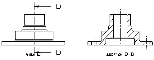
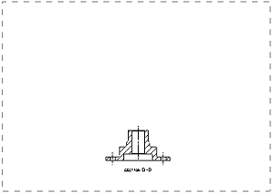

Create a section view, then move it to a new drawing sheet
-
Project a section view directly to the right of the front view.
Tip
Use the border of the front view to start the procedure.

-
Create a second drawing sheet with the same format as the current one. Name it Sheet 2.
-
In the Part Navigator
 , drag the section view node to drawing Sheet 2.
, drag the section view node to drawing Sheet 2.

Sheet “Sheet 2” Work -
Close all parts without saving.